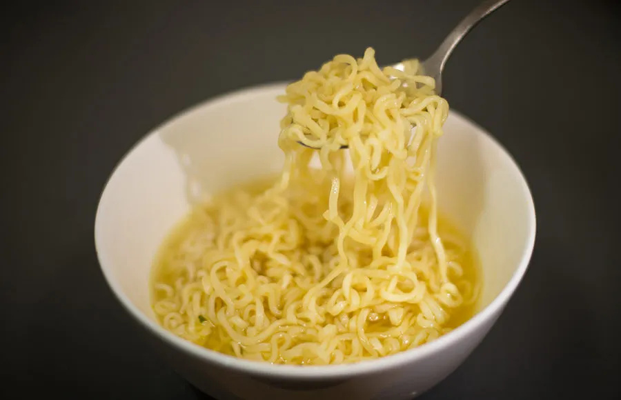

Ramen Noodles

Description
Ramen noodles: a favortite for people from all walks of life. It may seem like a difficult dish to get just right, but with my help you'll be taking in all that sodium in no time!
The best part? You don't have to deal with any pesky pots or pans!
Ingredients
- Maruchan ramen noodles
- Seasoning
- Water
Steps
- Boil some water with a kettle. (You can skip this stwp if you would rather use the microwave.)
- Break up your ramen noodle block while it's still in the packaging.
- Empty the packaging into your bowl of choice. (Make sure to take the seasoning packet out!)
- Open and pour the seasoning packet (or any seasonong of your choice) onto the noodles. I often add a bit of Peanut butter or PB powder.
- Pour the water onto the noodles. How much water, you ask? I don't know. I usually eyeball it.
- Put a lid of some sort on the bowl and wait 15 minutes. If you didn't boil the water, this is where you would microwave it for around 2 minutes.
- Once cooled, dig in to your culinary masterpiece.